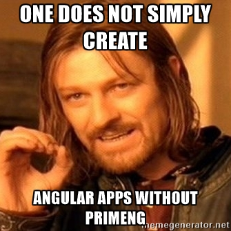
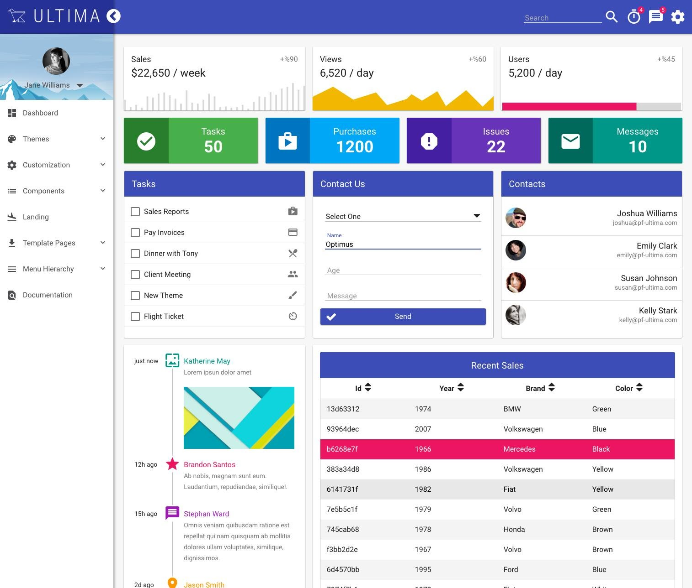

Welcome to Singapore-JS
PrimeNG
A leading UI component library for Angular 2
Sudheer Jonna
Full-stack Developer
Core team member of PrimeFaces and PrimeFaces Extensions open source projects
Author for multiple books
Technical reviewer
Trainer
Agenda
What is PrimeNG?
Why to choose PrimeNG?
What features it provides?
Quick setup with in minutes
What next in Prime World?
Introduction to PrimeNG
Sibling of PrimeFaces, the most popular JSF component library
Started around JAN 2016,by PrimeTek company with MIT license
Recently released PrimeNG 2.0 version
Why to choose PrimeNG
Over 80 rich UI components
Complete and Production ready
Open source vs Commercial libraries(KendoUI,Wijmo5 etc)
Customizable themes
Premium themes and layouts
Vibrant community support
What Angular Team says
Brad green,Director at Google and Angular when PrimeNG started

Mentioned in Angular conferences
Sponsor for AngularBeers and Ng-Conf conferences
What Angular developers are thinking

Latest web stack followed
Uses latest HTML5,CSS3,SASS web technologies
Accessibility(Section 508)
AOT support
CLI Support
Google material design
Image sprites and Font Awesome icons
Webpack and SystemJS modular setups
CSS over JS
Layouts and Themes

Rise of PrimeNG

== Who has used PrimeFaces? http://www.primefaces.org/whouses
Who has used PrimeNG?


New components,features and performance first
Accessibility improvements
RTL support
PrimeNG quick start setup in 2 minutes
Clone the repo from PrimeNG github
Install Angular2 and PrimeNG dependencies
npm install * Run the project
npm start
PrimeNG Demo
What next in Prime World
PrimeReact UI component library for React Devs
Plans for Polymer,Vue etc
Slides and sample app@ https://github.com/sudheerj/primeng-demo-slides